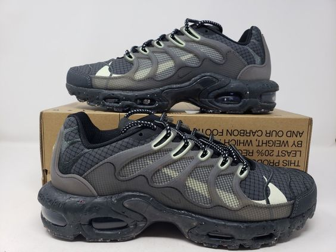

Welcome to Your Closet
Complete the Style Quiz to get started!
What are your go to shoes?
Air Forces
Mary Janes
Ballet Flats
Doc Martens

Chunky Sneakers
Which style bottoms do you wear most often?
Baggy cargo pants
Blue jeans
Parachute pants
a patterned maxi-skirt
a simple mini skirt
Which top suits your style?
a mesh flowy top
a lacy top
a solid top
a funky patterned top
a simple graphic tee
Choose an accessory for your outfit!
a bomber jacket
a crochet caradign
gold hoops
leg warmers
loads of rings
Finally, choose a full outfit you would wear!